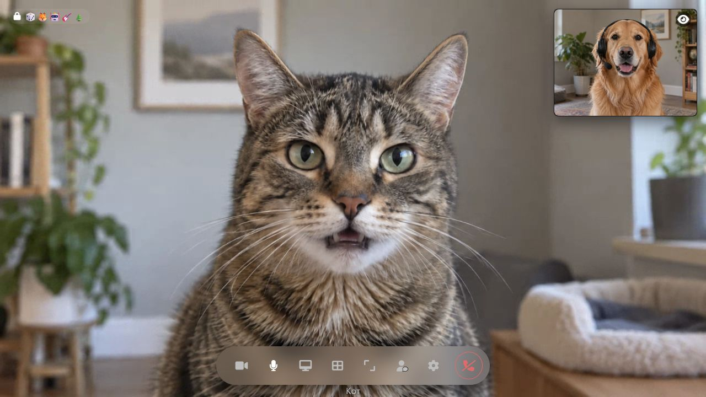
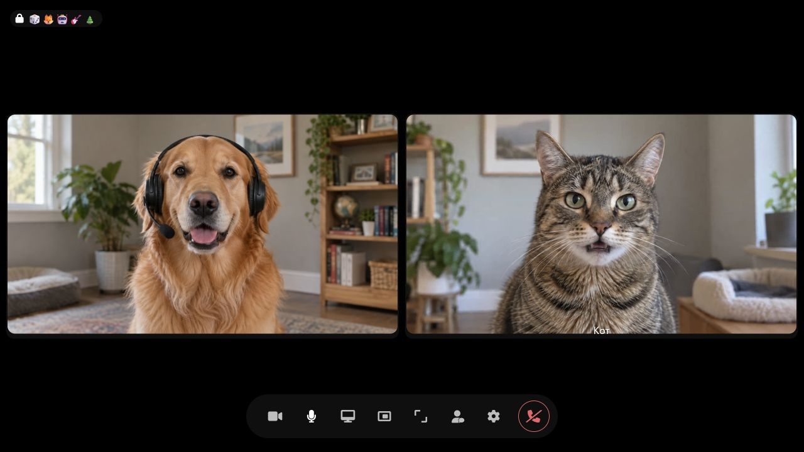
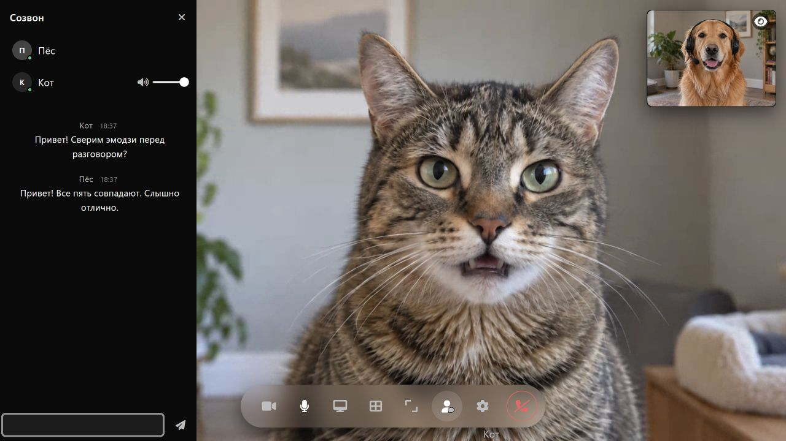
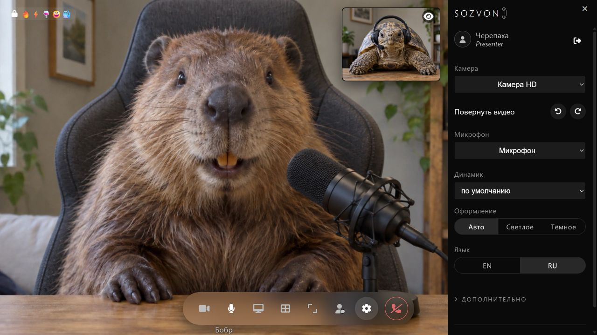
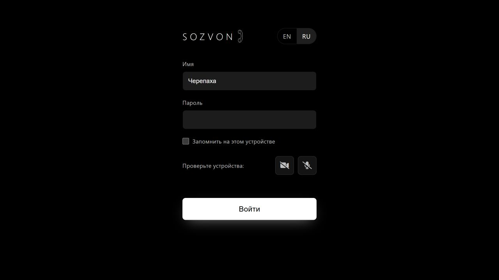
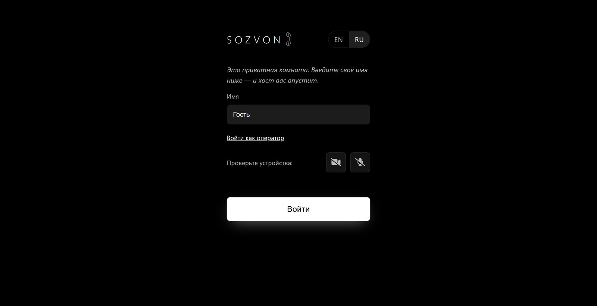

Персональные ссылки
Создайте отдельную комнату для собеседника и отправьте ему персональную ссылку. При необходимости доступ можно закрыть.
Для разговоров один на один. Вы устанавливаете SOZVON на своём сервере, а собеседник подключается по ссылке в браузере — без регистрации.






Пригласите собеседника по персональной ссылке или впустите его из комнаты ожидания.
О комнатах и ссылкахСоздайте отдельную комнату для собеседника и отправьте ему персональную ссылку. При необходимости доступ можно закрыть.
Если включена комната ожидания, вы решаете, кого впустить в звонок. По пригласительной ссылке можно войти без ожидания.
Чтобы затруднить подбор пароля, сервер ограничивает частоту попыток входа. После повторных ошибок он увеличивает задержку, а затем временно блокирует IP-адрес. В комплекте есть фильтр для fail2ban.
В настройках комнаты можно включить сквозное шифрование.
Как работает шифрованиеАудио и видео шифруются в браузерах участников, а сервер пересылает зашифрованные данные.
Перед разговором сверьте вслух пять эмодзи, которые видите на экране. Так вы проверите подлинность ключей.
Режим E2E поддерживает только двух участников. Реализация не проходила независимого аудита.
Сервер SOZVON написан на Go и поставляется одним исполняемым файлом. На сервере со свежей установкой Debian или Ubuntu скрипт настроит защищённое соединение, файрвол, запуск службы и учётную запись оператора.
curl -fsSL https://raw.githubusercontent.com/leyvanah/sozvon/main/contrib/install.sh | sudo shКогда установка завершится, скрипт покажет адрес сервера и пароль оператора. Войдите в панель, создайте комнату и отправьте собеседнику ссылку.
Для звонков можно пользоваться браузером или приложением. В приложении есть мастер установки SOZVON на VPS: укажите адрес сервера и пароль root для подключения по SSH.
Установщики для компьютера будут доступны в релизах. При желании приложение можно собрать из исходников.
Если сервер SOZVON уже развёрнут, APK для Android можно скачать прямо с него. Добавьте /sozvon.apk к адресу сервера — например, https://meet.example.com/sozvon.apk. При установке Android попросит разрешить установку из этого источника.
Установите SOZVON на Debian или Ubuntu одной командой в терминале. Инструкция также описывает ручную установку и настройку.